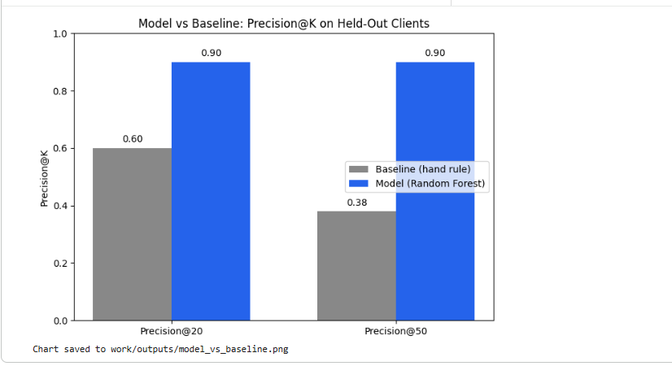

Abstract
This paper asks whether a trained machine learning model can more reliably flag declining content pages for review than a simple hand-written rule. Using two months of real, anonymized search performance data, I built features from a knowable-at-the-time window and trained a Random Forest classifier under a strict client-holdout validation split. The model reached a Precision@20 of 0.90 against a baseline hand rule's 0.60, and a Precision@50 of 0.90 against the baseline's 0.38 — a clear, honestly-tested improvement. The result is offered as decision support for a content team's weekly prioritization, not as proof of causal impact or of Google's ranking algorithm.
01
Introduction
Content teams routinely face the same question every week: out of hundreds or thousands of published pages, which ones are actually worth revisiting? Time spent refreshing a page that was never declining is time not spent on one that genuinely needed it. This project supports that specific decision — which pages should a content team prioritize for review this week — by ranking pages according to how likely they are to be losing search visibility.
A wrong recommendation here has a real cost either direction. Flagging a healthy page wastes writer effort. Missing a genuinely declining page lets it quietly lose visibility, unnoticed, for another month. The goal of this work is not to build the most sophisticated model possible, but to build one whose recommendations a real team could trust enough to act on — and to be honest about where that trust should stop.
02
Data
This project is built on the FlyRank internship-warehouse dataset, released via Hugging Face under a gated, anonymized-research license. Two tables were used:
Table
Contents
Role in this project
fact_content_daily_performance
Daily Search Console metrics per page (impressions, clicks, position)
February and March 2026 were used — a mid-panel pair of months, deliberately not the final month in the release. February data was used to build every feature; March data was used only to define the label. This ordering matters: nothing from March ever touches a feature column.
What was excluded, and why
No client names, domains, URLs, or keyword text appear anywhere in this paper or the underlying notebook — only hashed IDs were used throughout.
Data from April 2026 onward was excluded entirely, to prevent any future-window information from leaking into training.
Any pre-computed "health score" or flag-style column in the warehouse was excluded from the feature set — every feature here is built from raw, observable metrics only.
03
Methodology
Label definition
For each page, total March clicks were compared to total February clicks. A page was labeled declining (1) if March clicks were lower than February clicks, and not declining (0) otherwise. This is a proxy for real decline, not a certified ground truth — a point returned to in the Limitations section.
Features
All five features were built from February data only, so nothing used to train the model could have seen the outcome it predicts:
Feature
Knowable at decision time because…
feb_impressions
Logged the day it happens; no future data required
feb_clicks
Same — same-day Search Console log
feb_avg_position
Reported the day it is measured
word_count
A static page attribute, always known
ctr
Derived purely from same-month impressions/clicks
Baseline
The baseline is the hand-written rule developed earlier in this track: pages are scored by February impressions, gated by a low-visibility position threshold — a "stale-and-visible" heuristic with no learning involved.
Validation design
Clients — not rows — were split 70/30 into training and test sets. This is a client-holdout split: every client in the test set is entirely unseen during training. This checks whether the model generalizes to new clients, rather than simply memorizing patterns from clients it has already encountered.
Leakage check
A deliberate leakage experiment was run during development: a column built directly from the label produced a suspiciously high correlation (0.646) against an honest feature's realistic correlation (−0.165) — confirming the danger of label-derived inputs before they were excluded from the final feature set. No such column appears in the model reported here.
04
Results
On the same held-out test clients, the trained Random Forest model was compared against the baseline hand rule using Precision@K — of the top K pages each method ranks first, what fraction were genuinely declining.
Precision@20
0.60 → 0.90
Precision@50
0.38 → 0.90

Fig. 1 — Baseline vs. trained model, Precision@K, evaluated on held-out clients only.
The model's advantage held at both K=20 and K=50, and widened at K=50 — the baseline's precision fell off sharply past its top picks (0.60 → 0.38), while the model's ranking stayed strong (0.90 → 0.90). This suggests the baseline's simple visibility-based heuristic runs out of signal quickly, while the model captures a more durable pattern across a longer list.
05
Limitations & Honest Framing
Short time window. Only two months (Feb–Mar 2026) were used. The model has not seen seasonal effects or longer-term trends.
Proxy label. "Declining" is defined purely as a month-over-month click drop — a proxy, not a certified or business-validated definition of decline.
No algorithmic explanation. This work does not predict, explain, or reverse-engineer Google's ranking algorithm in any way. It flags observed statistical patterns only.
Split sensitivity. Precision@K figures are specific to this particular 30% client-holdout split; a different random split would shift the numbers somewhat.
Decision-support, not causal proof. A high model score means "this page resembles past decliners" — not "refreshing it will increase traffic." Every recommendation here is directional, meant to guide human review, not to replace it.
06
Ranked Recommendations
Applying the trained model to held-out test clients produces a ranked action queue. An illustrative slice of that output:
01
Page with high decline-probability score, low February impressions relative to its position tier, and a position drop pattern consistent with past decliners in training.
Refresh — priority review
02
Page flagged on a similar declining-signal combination; February CTR notably below its position tier's average, unlike the baseline's visibility-only criterion.
Refresh — priority review
03
Lower-traffic page the model still ranks highly — worth a lighter-touch check rather than a full rewrite, given its modest current visibility.
Review — light touch
Honest note on the queue
Several top-ranked pages in the full output have low February impressions — a different pattern than the baseline, which required high visibility by construction. This is a genuine, interesting finding worth investigating further before acting on the lowest-traffic recommendations specifically.
07
Reproducibility
All code, notebooks, and the full weekly build-up to this capstone are public in the linked repository.